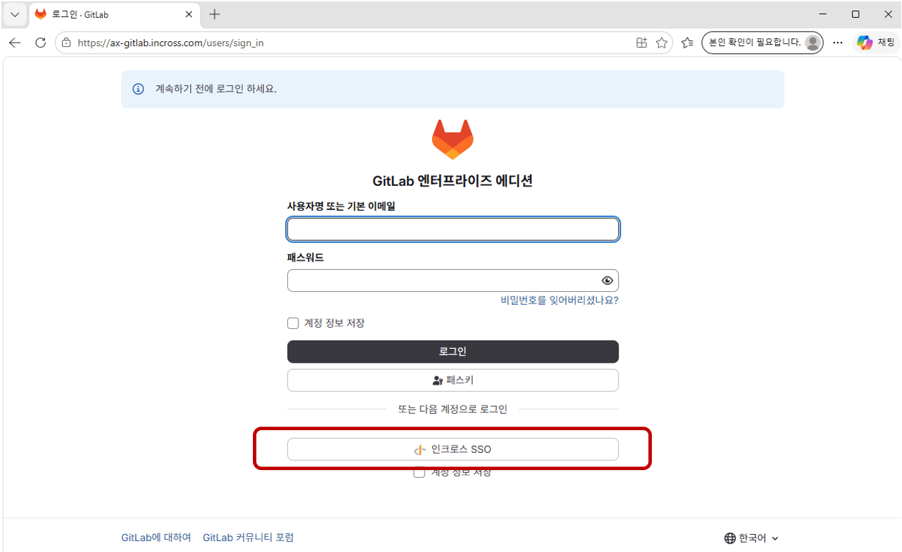

AI WIKI 설치 및 사용 가이드라인
안녕하세요, AI 비즈솔루션팀입니다.
이 글에서는 개인 AI 위키를 내 컴퓨터에 설치하고 사용하는 방법을 알아봅니다.
개인 AI 위키가 무엇인지 궁금하다면 AX 스테이션에 게시된 9/18 금요스터디 자료를 참고해 주세요.
1. 설치 및 세팅
설치 과정은 복잡하지 않습니다. AI 비즈솔루션팀이 준비한 템플릿만 그대로 붙여넣으면 세팅이 시작돼요.
아래 과정을 한 단계씩 따라해 주세요.
- https://ax-gitlab.incross.com/youngtack.park/personal-knowledge
이 링크에 접속하시면 아래 사진과 같은 로그인 화면이 보입니다. 하단의 ‘인크로스 SSO’ 버튼을 클릭한 후 사내 계정으로 로그인해 주세요.
{kind=link}

- 로그인 후 나온 화면을 하단으로 스크롤하면 ‘2단계 인증’ 섹션이 있습니다.
‘일회용 암호 인증 (OTP)’의 ‘인증기 등록’을 클릭해 주세요.

QR코드를 휴대폰으로 스캔한 후 연결할 앱으로 ‘Google OTP’를 선택합니다.
Google OTP 앱으로 연결되면 6자리 숫자 코드가 보입니다.
QR코드 하단의 현재 비밀번호는 사내 계정 비밀번호를, 인증 코드 입력은 OTP 앱의 6자리 숫자 코드를 입력해 주세요.

‘이중 인증 앱으로 등록’ 버튼을 누르면 인증 완료입니다!
- 이제 GitLab에 저장된 AI 위키 소프트웨어를 내 컴퓨터로 가져올 준비가 되었습니다.
내 컴퓨터에 AI 위키를 직접 설치해 줄 AI 에이전트를 열어 보겠습니다.
- ChatGPT에서 사용하고 싶다면, 아래 사진처럼 왼쪽 창에서 Codex 모드로 전환해 주세요.
- Claude에서 사용하고 싶다면, 아래 사진처럼 왼쪽 창에서 Code 모드로 전환해 주세요.
- 두 경우 모두 웹사이트 접속이 아닌, 데스크탑 설치가 되어 있어야 합니다.


- 이 글에서는 Claude Code를 기준으로 설명하겠습니다. Codex도 방법은 완전히 동일합니다.
- 내 PC의 로컬 디스크(C:)에 빈 폴더를 하나 생성해 주세요.
폴더 생성이 완료됐다면 다시 Claude Code로 돌아와 주세요.

하단에서 ‘폴더 없음’ - ‘폴더 열기’를 선택하면 폴더를 선택할 수 있습니다.
조금 전 생성한 빈 폴더를 선택해 주세요. 아래 사진처럼 내 폴더의 이름으로 변경되었다면 내 폴더를 채팅에 정상 연결했다는 의미입니다.

- 채팅에 아래 프롬프트를 복사해서 그대로 붙여넣기해 주세요.
에이전트가 즉시 위키 세팅을 시작합니다.
https://ax-gitlab.incross.com/youngtack.park/personal-knowledge
이 저장소로 내 개인 지식 공간을 설치하고 설정해줘.
이름은 '[내 서재]'로 하고, 다른 프로젝트에서도 이 이름으로 기록하거나 찾아달라고 할 수 있게 연결해줘.
내 자료를 보관할 비공개 백업도 연결하고, 준비되면 어떻게 사용하면 되는지 알려줘.- 에이전트가 GitLab 로그인을 요청하면 위에서 사용한 사내 계정으로 동일하게 인크로스 SSO 로그인을 진행해 주세요. 혹시 로그인 페이지가 열리지 않는다면 채팅으로 에이전트에게 요청하세요.
- 설치 환경에 따라서 에이전트가 프로그램 설치를 요청할 수도 있어요. 에이전트의 지시에 따라 설치하고, 설치가 어렵다면 에이전트에게 ‘설치 방법을 단계별로 알려줘’ 라고 요청해 보세요.
2. 운영 규칙
위키 운영 시 반드시 지키도록 하고 싶은 규칙이 있나요?
- 설치 직후 첫 프롬프트로 운영 규칙을 저장하도록 명령해 보세요.
- 이후 위키는 더 이상 규칙을 일일히 입력하지 않아도, 정해진 규칙에 따라 움직입니다.
- 아래 템플릿을 활용해도 좋고, 별도로 원하는 규칙이 있다면 추가로 입력해도 좋습니다.
이 위키의 운영 규칙을 기억해 줘.
- 기존 자료를 먼저 검색한다.
- 원본은 raw에 그대로 보존한다.
- 정리 문서는 내용에 맞는 wiki 폴더에 저장한다.
- 모르는 내용은 추측하지 않는다.
- 중복·충돌·관련 문서를 확인한다.
- 삭제나 큰 수정은 미리 보여주고 확인받는다.
- 작업 후 변경 파일과 위치를 알려 준다.
3. 파일을 추가/수정/삭제하는 경우
이제 본격적으로 AI 위키를 사용해 보겠습니다.
- 위키에 저장하고 싶은 문서를 준비해 주세요.
pdf, word, excel, 이미지 등 내 폴더에 저장할 수 있는 형식이면 무엇이든 좋습니다.
- 채팅에 문서를 추가하고, 문서에 관한 간략한 설명과 함께 다음과 같이 저장을 요청하세요.
저장 작업이 완료되면 에이전트가 결과를 알려줍니다.
내 서재에 이 파일을 추가해 줘.
제목:
내용:
출처:
관련 프로젝트·부서:
기존 자료와 중복·충돌 여부를 확인하고 저장해 줘.- 문서가 아닌 간단한 의견, 또는 메모도 프롬프트에 입력하면 위키에 저장할 수 있어요.
예) “00 캠페인의 대상에 2030 여성도 추가해 줘.”
- 위키에 저장된 문서의 내용을 수정하고 싶은 경우, 수정을 요청해 보세요.
단, 원본 문서는 절대 수정되지 않습니다.
AI가 직접 작성한 문서 요약본(Markdown)만 수정되는 것입니다.
내 서재의 `[문서명]`을 수정해 줘.
수정 이유:
수정할 내용:
근거:
변경 전·후와 영향받는 문서를 먼저 보여주고, 확인 후 저장해 줘.
- 문서 삭제도 다음과 같이 명령할 수 있습니다.
내 서재의 `[문서명]`를 삭제해 줘.
삭제 이유:
삭제 범위: [정리본만 / 원본 포함]
관련 링크와 원본 보존 여부를 먼저 확인하고, 삭제 대상 목록을 보여준 뒤 내 확인 후 삭제해 줘.
4. 기타 프롬프트 템플릿
- 자료 검색·답변
내 서재에서 [질문]을 찾아 줘. 근거 문서명과 관련 부분을 함께 보여 줘. 자료에 없으면 확인 필요로 표시해 줘.
- 문서 비교·충돌 확인
[문서 A]와 [문서 B]를 비교해 줘. 같은 내용, 달라진 내용, 충돌하는 내용, 확인이 필요한 부분을 표로 정리해 줘.
- 회의·대화 정리
아래 회의 내용을 내 서재에서 정리해 줘. 결정사항, 근거, 담당자, 미해결 질문, 다음 행동으로 나눠 줘. 원문: [회의 내용]
- PDF·Word·자료 읽기
이 자료를 읽고 핵심 내용, 주요 규칙, 적용 대상, 확인 필요 사항으로 정리해 줘. 원본은 보존하고 출처를 연결해 줘.
- 결정사항 기록
다음 결정사항을 내 서재에 기록해 줘. 결정 내용, 결정 날짜, 근거, 영향받는 문서, 이후 확인할 일을 포함해 줘.
- 프로젝트·주제 현황 정리
내 서재에서 [프로젝트명]의 현재 상태, 주요 자료, 최근 변경사항, 미해결 질문을 한눈에 정리해 줘.
- 위키 점검
내 서재에서 출처가 빠진 문서, 끊어진 링크, 중복 내용, 서로 충돌하는 내용을 찾아 줘. 수정하지 말고 목록만 보여 줘.
- 공유용 요약
내 서재의 [주제]를 AI를 잘 모르는 직원도 이해할 수 있게 한 페이지로 요약해 줘. 전문용어는 풀어서 쓰고 근거 문서명을 표시해 줘.
- 레퍼런스 저장
내 서재에 이 레퍼런스를 저장해 줘. 출처: 유형: 참고할 요소: 적용 이유: 그대로 적용하면 안 되는 부분: 저장 날짜: 중복 여부를 확인하고, 원본은 보존한 뒤 관련 프로젝트 문서와 연결해 줘.
부록) 컨플루언스 MCP 연결하기
- 컨플루언스에 저장된 기존 문서를 위키에 편하게 연결하는 방법을 안내해 드립니다.
pdf나 word로 수동 내보내기하여 저장하는 방식도 물론 가능하지만, 내보낼 문서가 많다면 MCP 방식을 사용해 보세요.
- Codex를 사용하는 경우
- ‘설정’ - ‘플러그인’에서 ‘Atlassian Rovo’를 검색하여 연결하세요.

- Codex 채팅창으로 돌아가 ‘+’를 클릭하면 플러그인을 연결할 수 있습니다.
Atlassian Rovo를 선택한 후 다음과 같은 프롬프트를 입력하세요.
예) “00 스페이스의 00 폴더의 00 문서 내용을 [내 서재]에 저장해 줘.”
- Claude Code를 사용하는 경우
- ‘사용자 지정’ - ‘커넥터’에서 ‘Atlassian Rovo’를 검색하여 연결하세요.
- 이후 사용 방법은 위와 같습니다.
🙂 AI 비즈솔루션팀이 준비한 개인 AI 위키 사용 가이드라인은 여기까지입니다. 🙂
사용 중 문제가 생기거나, AI 위키와 관련해 궁금한 점이 생기면 AI 비즈솔루션팀으로 연락 주시기 바랍니다.
감사합니다.